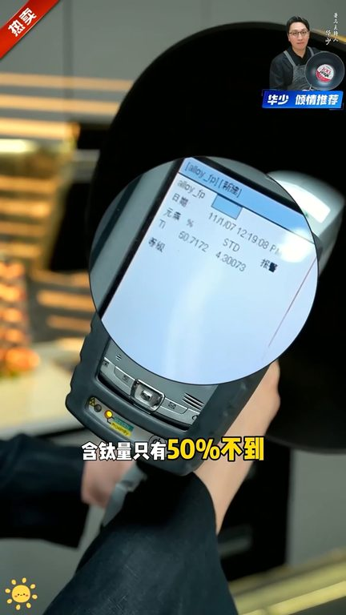
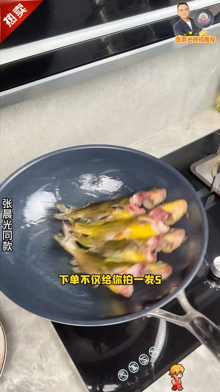

TOP 1 · 代表素材深度拆解
核心放量 强点击
视频为原始素材 HTTPS 链接；点击后加载，建议在网络环境良好时播放。
37.2万素材消耗
4.47%CTR
30.5%类目消耗占比
+1.47pp较类目均值
表现判断
该素材是类目内第 1 名，属于“核心放量”；CTR 高于类目均值。消耗体现承接规模，CTR 体现首屏与定向效率，两项应结合判断，不能仅以单指标下结论。
表达标签
口播三段式证据
开场钩子最近很多人私信我说我上回推荐了咱们那个三合百分百淳态的不沾锅好用是好用就是有点贵你看今天我又来了三合工厂方总就在我的身边只是三合的董事长咱们要跟他好好砍砍价先跟你说好大家说的是不是五折
中段论证咱们来测一下大家看到寒态量只有百分之五是不到看到了吗大家别忘了这种是属于韩态的特抚龙涂层锅这款锅主打的是真态零涂层我们现在来测一下它的韩态量到底有多少只有二点几这也敢叫真态零涂层下面来看一看三合纯态不沾锅它锅内直接就标注的是百分之百纯态百我们来测一测测出来是百分之百的一个态寒量只要态寒量测出来在百分之九十九十六七七以上的就叫做纯态锅三合作为二十年大品牌有保障…
结尾转化清凉化的锅体只有两瓶水重量小女生也能轻松颠锅燃气噪电磁炉电陶炉都能适配趁现在三合六一八大醋这么好用的零图层纯态锅下单不仅给你派一发五还送七天免费使用感兴趣的家人赶紧点头像进直播间把它带回家吧
有效点
- CTR 4.47% 高于类目均值 3.00%，开场或人群指向具备点击优势
- 口播包含明确到手机制或直播间指令，转化路径较完整
迭代动作
- 保留当前高效钩子，复制 3 个变量版本：人物、首句和首帧分别单变量测试
- 视频时长偏长，建议剪出 30–45 秒短版，仅保留钩子、两项证据和一次 CTA
- 复核功效、绝对化及价格稀缺措辞；增加适用边界和效果因人而异提示
合规关注
钩子建立 · 7.2s

场景/问题展开 · 54.9s
卖点证据 · 126.3s

转化收口 · 173.9s
查看完整口播摘要
最近很多人私信我说我上回推荐了咱们那个三合百分百淳态的不沾锅好用是好用就是有点贵你看今天我又来了三合工厂方总就在我的身边只是三合的董事长咱们要跟他好好砍砍价先跟你说好大家说的是不是五折三折要抢到三合的百分百淳态不沾锅人物可是找到了答不答应方总待会你给表个态可以可以可以考虑没问题是考虑还是没问题没问题没问题没问题没问题没问题大家等着到三合直播见好不好我要三合直播实际上一切不要价格到499不可能的百分之百的囤态百能锅没有低于一千的我们拿着几十万的光谱仪来测一下这些锅的泰寒量到底是多少这款锅声称是寒态的不沾锅它写的是寒态咱们来测一下大家看到寒态量只有百分之五是不到看到了吗大家别忘了这种是属于韩态的特抚龙涂层锅这款锅主打的是真态零涂层我们现在来测一下它的韩态量到底有多少只有二点几这也敢叫真态零涂层下面来看一看三合纯态不沾锅它锅内直接就标注的是百分之百纯态百我们来测一测测出来是百分之百的一个态寒量只要态寒量测出来在百分之九十九十六七七以上的就叫做纯态锅三合作为二十年大品牌有保障本来老妈嫌贵不准备买的没想到现在三合源投工厂大醋三合联合大明星张成光又推出超大福利了昨天还是派发二今天直接派一发五而且还不到一顿火锅前再不买就真的亏大了哎买一送一的时候你不买买一送二的时候你就说再等等现在好了啊今天三合周年庆专项架派一大五派一大五就在三合直播间他采用航空机唇态液体压住成型零图层零幅零分解使用更安心并且唇态的材质更皆是耐用铁铲钢丝球随便造威纳封窝所有技术就能做到物理悬浮不沾随便摊个蛋饼都完全不沾复合聚能锅底让导热更均匀大火爆炒时锅气充足菜品更香清凉化的锅体只有两瓶水重量小女生也能轻松颠锅燃气噪电磁炉电陶炉都能适配趁现在三合六一八大醋这么好用的零图层纯态锅下单不仅给你派一发五还送七天免费使用感兴趣的家人赶紧点头像进直播间把它带回家吧